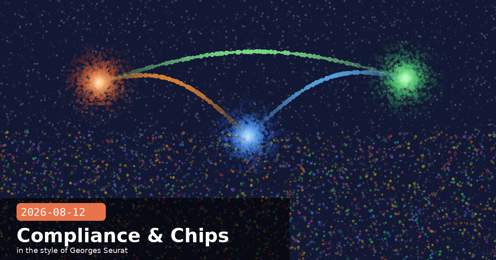

Compliance API Expands, Sonnet 5 Price Locked In, and Anthropic's Chip Team

🧭 Compliance API Now Covers Cowork and Claude Code Sessions
Anthropic has expanded its Compliance API — previously limited to Claude chat sessions — to include Claude Cowork (desktop, web, and mobile) and Claude Code (CLI and desktop app). Enterprise security teams can now pull a unified record of session content and metadata across all three surfaces through a single API endpoint, with no new infrastructure or separate access keys required.
What the Compliance API surfaces
For each covered session, the API returns:
Full prompt and response text — every user turn and Claude turn in the session.
Tool calls and results — for Claude Code, this includes file reads, shell commands, and web fetches with their inputs and outputs.
Artifacts — documents, code files, or other structured outputs produced during the session.
Session metadata — timestamps, user identity, seat ID, model version, and token counts.
eDiscovery and audit workflow
The coverage extension is aimed directly at eDiscovery and internal audit use cases. Previously, enterprise legal and compliance teams had to handle Claude chat exports separately from any Claude Code activity logs, creating a gap when an incident spanned both surfaces. The unified endpoint closes that gap: a single query returns everything a user did across chat, Cowork, and Code for a given time range or user.
Practical implication for Claude Code deployments
Claude Code tool calls — including shell commands, file writes, and any MCP-connected operations — are now individually addressable records in the Compliance API response. For teams running Claude Code on production infrastructure or handling sensitive codebases, this means you can finally answer "what did Claude touch and when?" from your existing audit tooling without needing to parse local session logs.
The expansion is in beta for Claude Enterprise customers with an existing Compliance Access Key. No configuration change is needed; Cowork and Code sessions begin appearing automatically in the API output once beta access is active.
🧭 Claude Sonnet 5 Introductory Pricing Made Permanent
Anthropic has confirmed that Claude Sonnet 5's introductory pricing — $2 per million input tokens, $10 per million output tokens — is now permanent. The planned September 1 step-up to $3/$15 per million tokens has been cancelled. Developers and businesses that had already budgeted for the higher rates can revise their cost models downward.
Context: the original pricing cliff
When Sonnet 5 launched earlier this year, Anthropic set an introductory rate with an explicit end date, positioning the September increase as the "standard" price once the launch period ended. The decision to lock in the introductory rate reflects competitive pressure: both OpenAI and several Chinese AI labs have cut frontier model prices in recent months, making a price increase difficult to sustain without a meaningful capability gap. Anthropic has not announced further price changes for other models at this time.
Cost comparison at current rates
Claude Sonnet 5 — $2 input / $10 output per MTok (permanent)
Claude Haiku 4.5 — $0.80 input / $4 output per MTok
Claude Opus 4.6 — $15 input / $75 output per MTok
What this means for teams choosing between models
With the Sonnet 5 cliff removed, the Sonnet-to-Opus cost ratio stays at 7.5×. Teams running hybrid routing — Sonnet for most tasks, Opus for deep reasoning — no longer face a September decision point about whether to re-route more traffic to Haiku. The stable ratio lets you fix your cost-per-task model now rather than revisiting it after autumn pricing changes.
# Quick cost estimate for a typical Claude Code session
# Using Sonnet 5 at permanent rates:
# ~200K input tokens + ~40K output tokens
# = (200 * 2 + 40 * 10) / 1000 = $0.40 + $0.40 = $0.80 / session
# Compare to what the Sep cliff would have cost:
# = (200 * 3 + 40 * 15) / 1000 = $0.60 + $0.60 = $1.20 / session
Anthropic has confirmed it is building an in-house team dedicated to designing custom silicon optimised specifically for Claude's inference and training workloads. Job listings published this week span chip architecture, RTL design, physical design, and verification, with reported compensation as high as $485,000 for principal-level roles. The team will operate alongside — not replace — Anthropic's existing compute partnerships with Nvidia, AMD, AWS, and Google.
Strategic rationale
General-purpose AI accelerators are designed to serve a wide range of model architectures. A chip purpose-built for Claude's specific attention patterns, context lengths, and memory access requirements could deliver meaningfully better performance-per-watt and cost-per-token than rack-and-stack GPU deployments. Amazon's Trainium, Google's TPU, and Meta's MTIA are all examples of the same bet paying off for other frontier labs.
Timeline and scope
Anthropic has not disclosed a target tape-out date or production volume. Custom silicon typically takes three to five years from team formation to production-scale deployment, meaning the first Claude-specific chips would arrive no earlier than 2028 on an aggressive schedule. In the interim, the $10 billion compute deal with Volta (announced earlier this month) and existing AWS and Google cloud arrangements remain the primary compute path for Claude inference.
What this means for Claude's long-term cost trajectory
Custom silicon is fundamentally a cost and efficiency play. If Anthropic achieves even a 30–40% improvement in inference efficiency over commodity GPUs — a conservative target for purpose-built chips — that translates directly to lower cost-per-token at scale, which gives Anthropic more pricing flexibility and margin headroom without sacrificing capability. The permanent Sonnet 5 price lock announced today is sustainable partly because of the roadmap this silicon investment represents.